長良川沿いを北上する､美並から郡上白鳥､和良までのお店です｡
粥川の里の奥にある､ライド中のごちそうカフェ
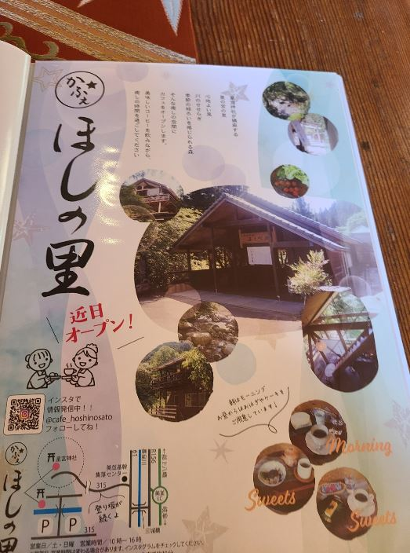
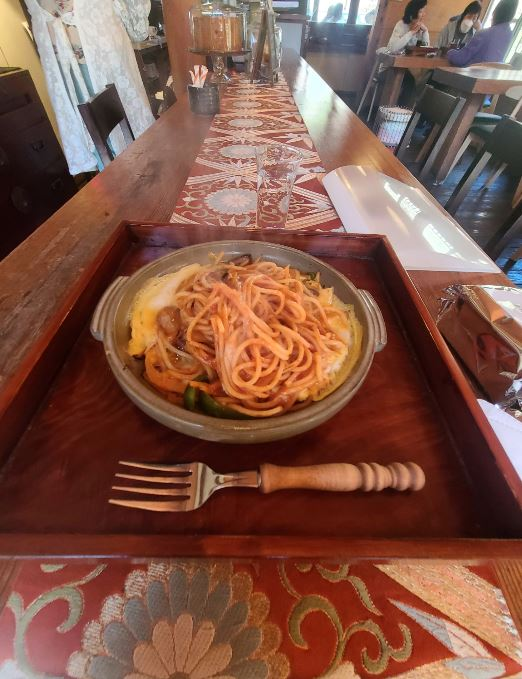
美並の粥川の里､星宮神社の近くにあるカフェです｡訪れたのはお昼前の11時でしたが､店内はとても賑わっていました｡
モーニングの時間をすぎていたので､ランチのナポリタンをいただきました｡この先には難所の八王子峠が待っているので､ここでしっかり補給していきます｡コガイチなど､高賀山周辺のコースにおすすめです｡
立ち寄れるコース: コガイチ
長良川沿いの古民家で､手作りパンとコーヒーを
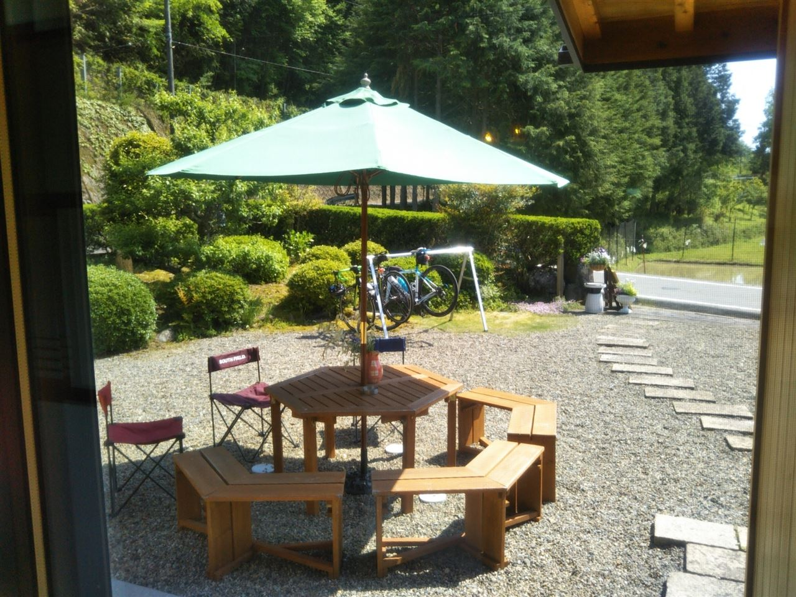
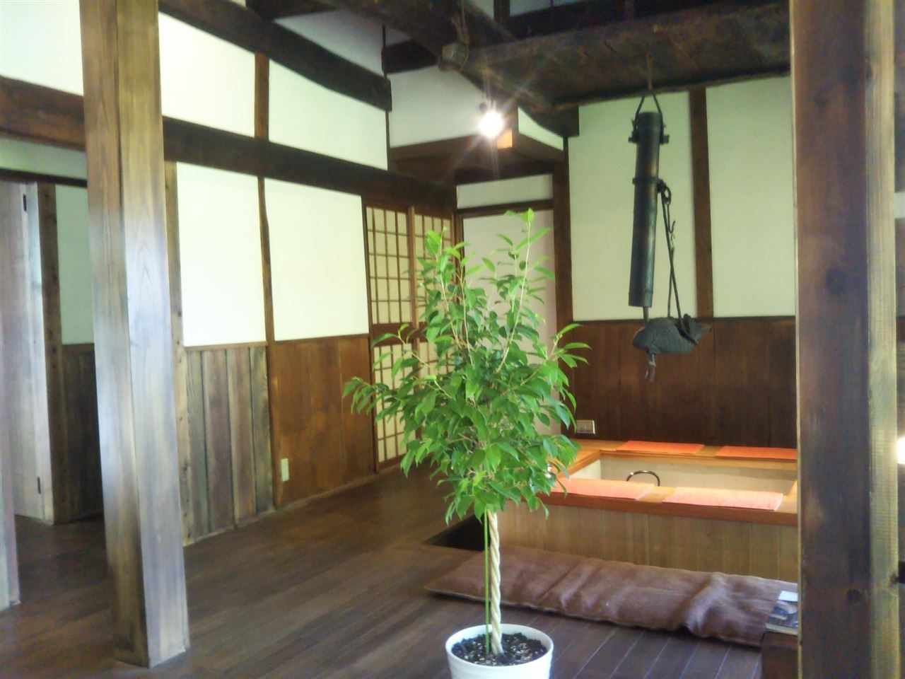
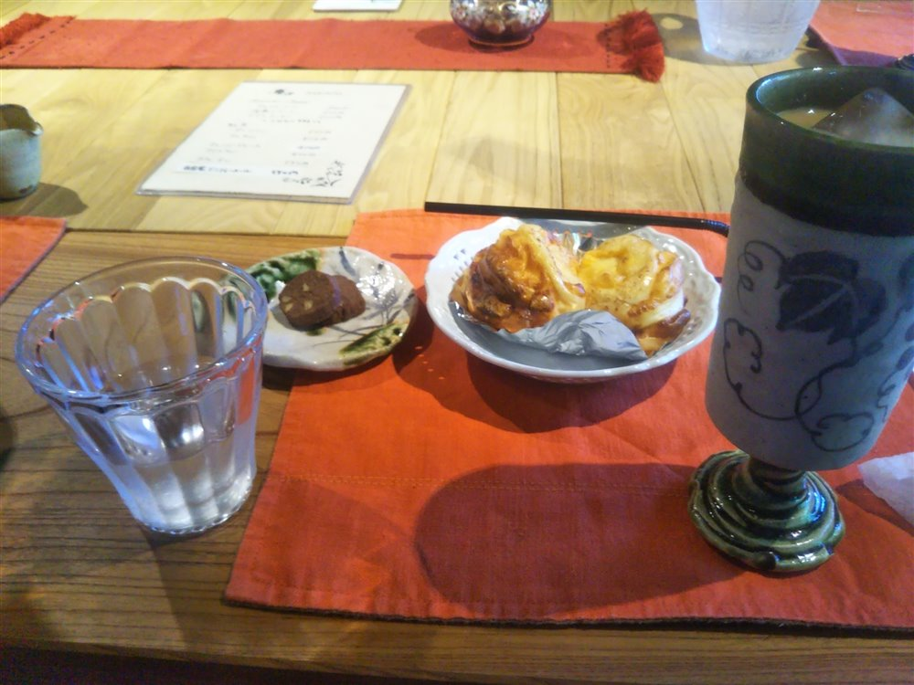
美並温泉の手前にある､サイクリストでいつも賑わっているカフェです｡店内の調度品がとてもセンスよく､ゆっくり話がはずみます｡
おすすめはチーズケーキですが､手作りパンも絶品です｡コーヒーに好きなパンを組み合わせて､郡上方面へのライドの休憩にどうぞ｡セキサイでは､郡上八幡へ行く鉄板コースのティータイムにもなっています｡
立ち寄れるコース: 長良川サイクリング
郡上白鳥の道の駅にある､行列のできるラーメン屋さん
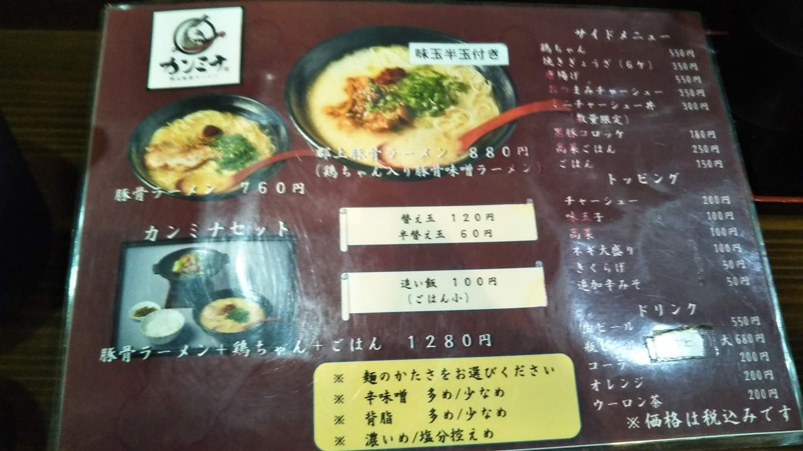
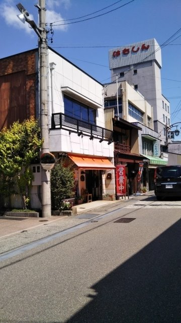
郡上白鳥の道の駅にあるラーメン屋さんです｡名物は｢郡上豚骨｣｡ここのラーメンは本当においしいと評判です｡
11時台でも外に行列ができるほどの人気なので､早めの到着がおすすめです｡
郡上八幡の町なかのメイン通りの中央にも､お店があります｡11時開店で､並んで入店しました｡味は一蘭によく似ていて､とてもおいしいです｡
立ち寄れるコース: 長良川サイクリング､白鳥サイクリングfrom美濃
福井風の薄いカツが何枚も入った､駅前のカツ丼
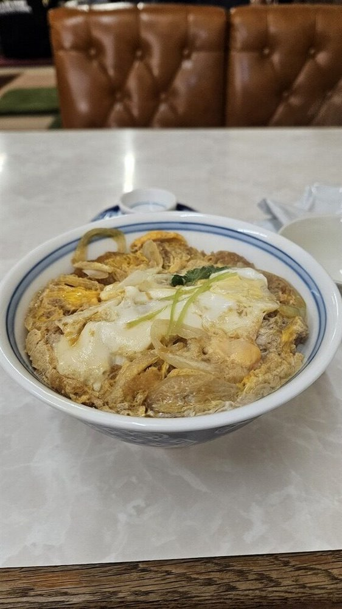
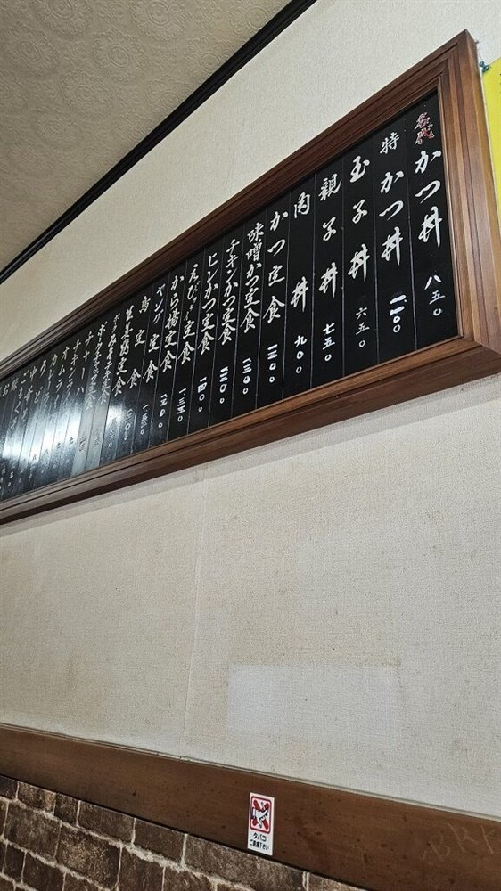
郡上白鳥の駅前にある食堂です｡名物は福井県風のカツ丼で､薄いカツが何枚も入っていて､とてもおいしいと評判です｡
110kmほど走ったあとに食べるカツ丼は格別です｡郡上や石徹白方面へのライドの締めにどうぞ｡
立ち寄れるコース: 白鳥サイクリングfrom美濃
田んぼと山を眺めながら食べる､屋外席のカツ重
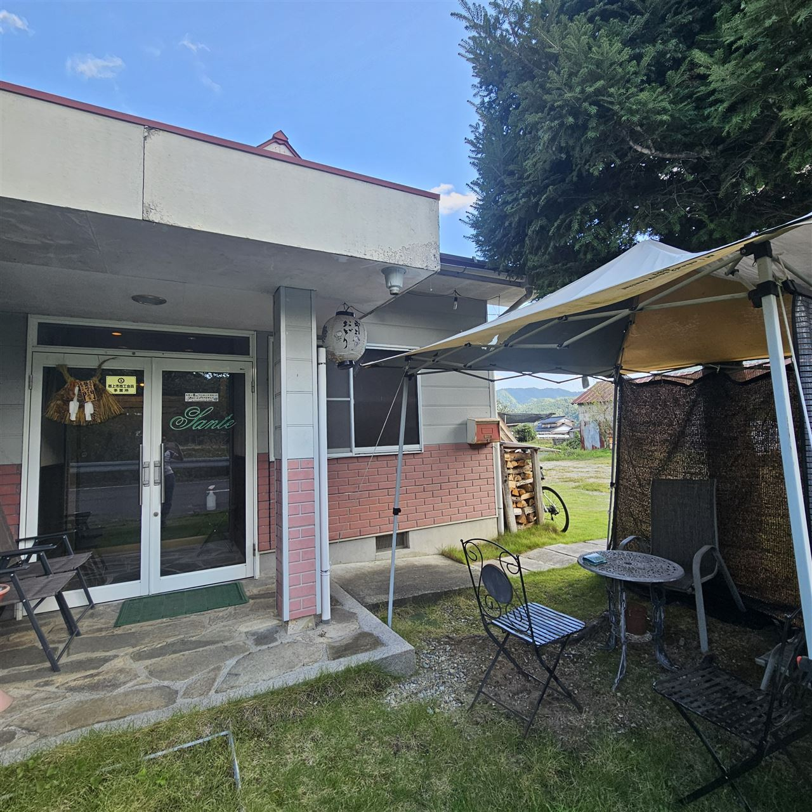
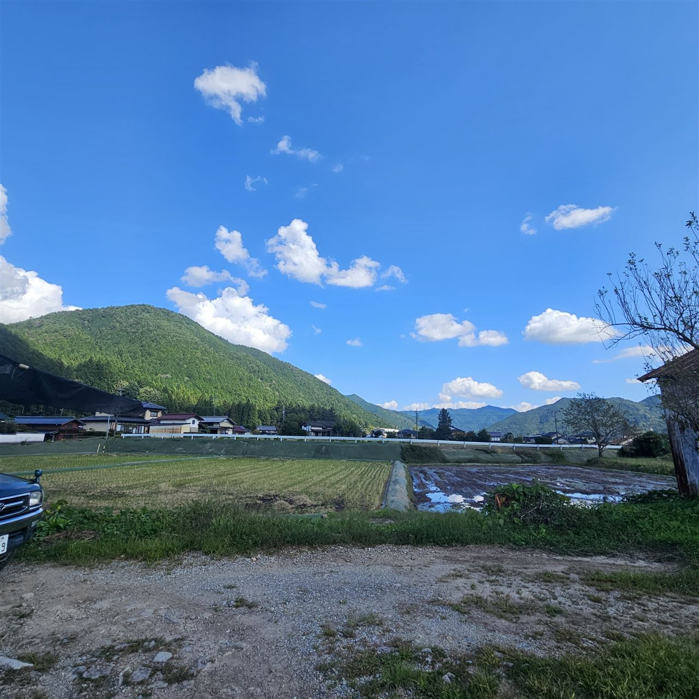
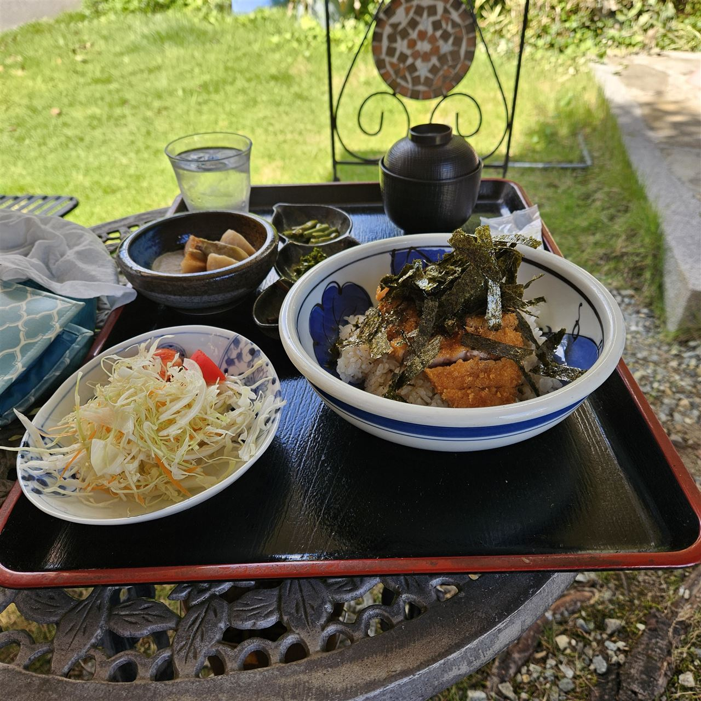
郡上市和良にあるレストランです｡入口には郡上市商工会員のステッカー､お店の前の芝生にはテントとテーブル席が出ていて､田んぼと山をきれいに見渡せます｡
注文したのはカツ重定食｡サラダと小鉢､お椀つきで､カツの上には海苔が山盛りです｡ロードバイクで山を走ってきたのに､重の上にも山がありました｡風を感じながらいただくカツ重は格別です｡
白鳥サイクリングfrom美濃のおすすめグルメ､ハンバーグステーキコダチ
116km獲得1,000mの｢白鳥サイクリングfrom美濃｣のおすすめグルメとして､ルートページでご紹介しているお店です｡川沿いの絶景ルートをたどるコースの途中で立ち寄れます｡
このコースは信号がほとんどなく､郡上八幡､郡上大和､郡上白鳥と標高を少しずつ上げていくので､初めての100kmにぴったりです｡郡上八幡城にも立ち寄って､ライドの計画にお役立てください｡
立ち寄れるコース: 白鳥サイクリングfrom美濃
ショーケースにお菓子とパンが並ぶ､美並の和菓子屋さん
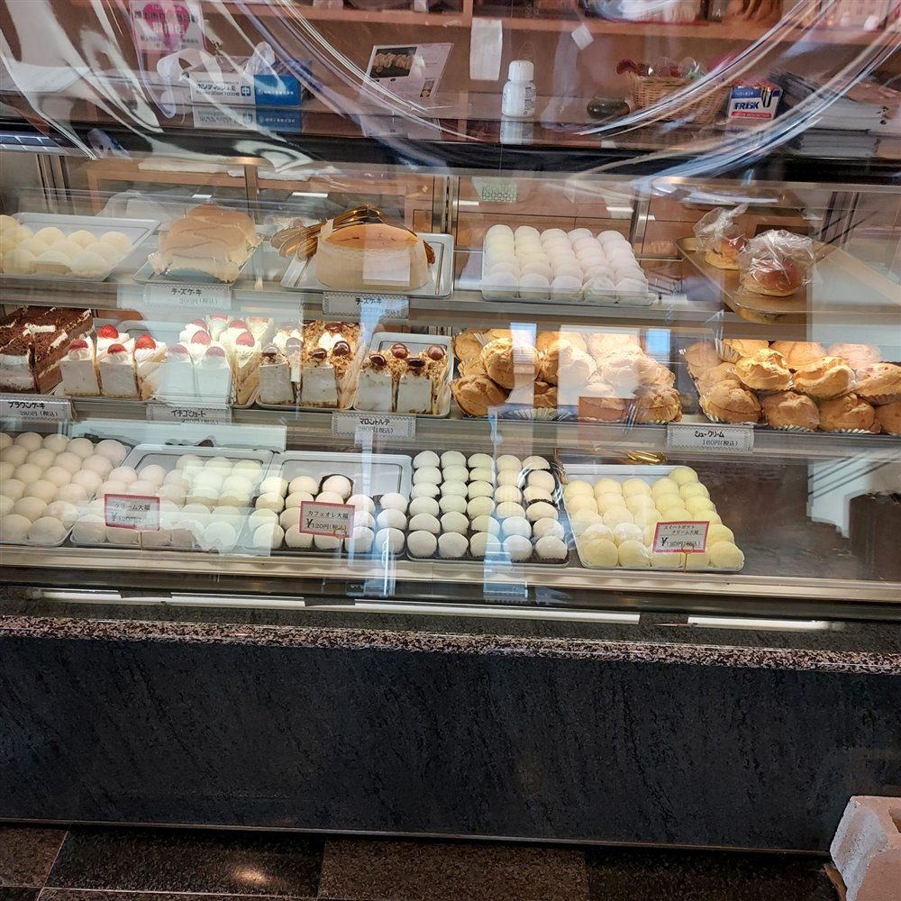
美並の中心部､苅安にある和菓子屋さんで､郡上方面へのライドでいつも立ち寄るお店です｡ショーケースには､色とりどりのお菓子とおいしそうなパンが並びます｡
いつも混み合っている人気店です｡家から30kmほどの地点にあり､補給のタイミングにもちょうどよい場所です｡
立ち寄れるコース: 長良川サイクリング
長良川ぞいの旧駅舎が目印｡水場とトイレで一息つける､サイクリスト御用達の温泉
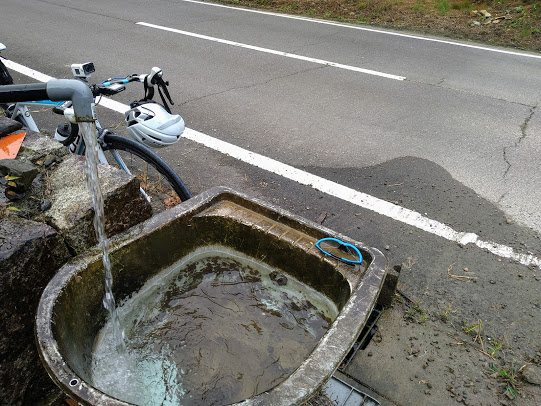
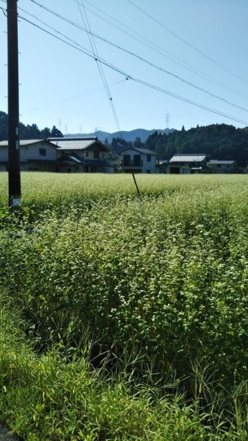
郡上街道ぞいにある美並子宝温泉(みなみ子宝の湯)は､関から郡上八幡へ向かうライドの定番エイドステーションです｡駅舎にトイレがあり､自動販売機もそろっているので､補給と休憩にぴったりの立地です｡
うれしいのは､敷地のそばにある水場です｡水量がとにかく多く､ひしゃくで水をかぶれるので､暑い日のクールダウンにうってつけです｡水がとても冷たくて気持ちがいいと､猛暑のサイクリングで評判の｢中濃の水場｣になっています(2020年)｡
ここから近くには､カフェみなみあんや渡辺菓子舗といった､セキサイおなじみのお店もそろっています｡周辺の裏道では､そば畑の景色にも出会えます(2019年)｡
立ち寄れるコース: 長良川サイクリング
町の西端にある道の駅で､フランクを補給
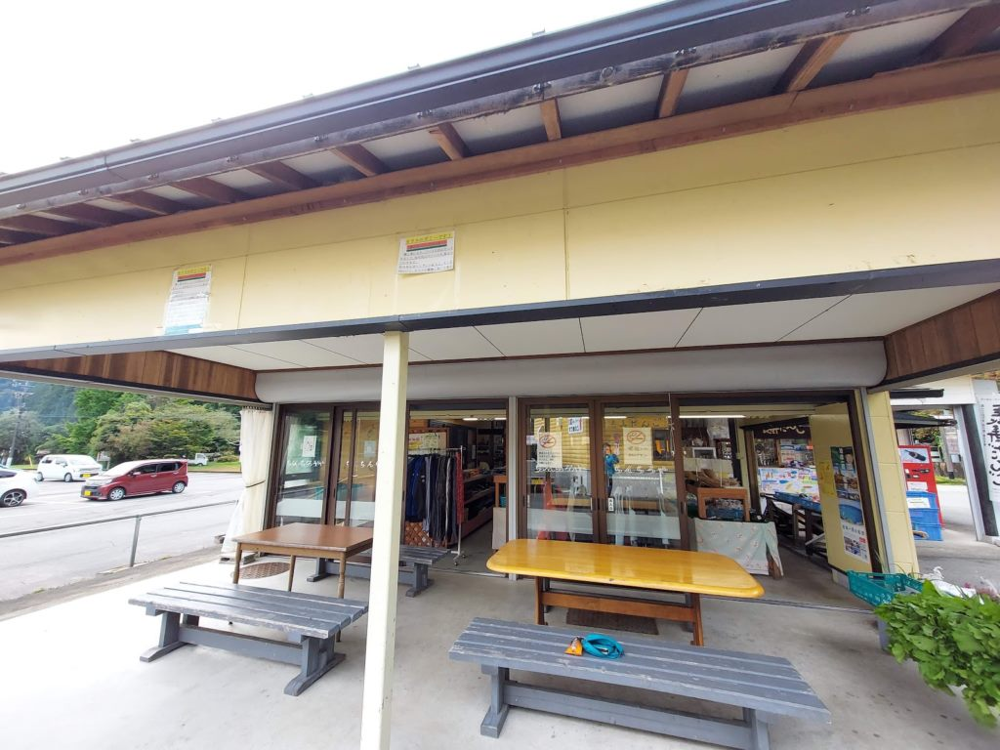
和良の町の西端にある道の駅の中のお店です｡秋の和良ライドで立ち寄り､フランクを買って補給しました｡
ここから北へ向かい､鹿倉の集落から明宝へ抜ける峠に入っていきます｡のどかな田舎道で､静かで気持ちのよいコースです｡
郡上八幡ライドの第2エイド｡セキサイのホームコースの安心ポイント
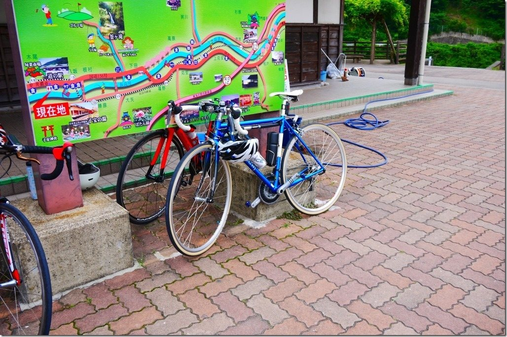
郡上八幡ライドの第2エイドポイントで､関から約20kmの位置にある道の駅です｡国道156号を北上してきて､最初にほっとひと息つける場所｡
ここからは､近くの美並子宝温泉やカフェみなみあん､渡辺菓子舗といった､セキサイおなじみのお店へ寄り道できます｡自転車の置き場にはサイクルマップの看板もあって､サイクリストにやさしい道の駅です｡
立ち寄れるコース: 長良川サイクリング
岐阜県下でも最大級の規模｡名物｢明宝ハム｣のフランクで補給
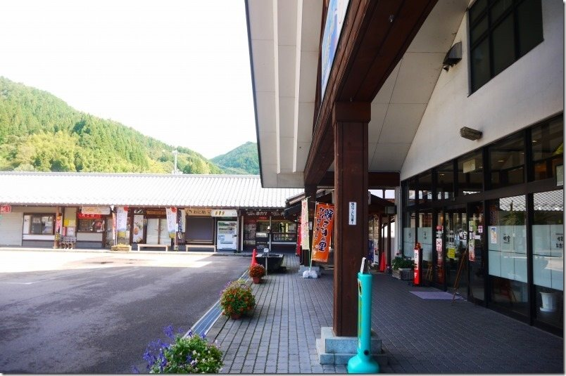
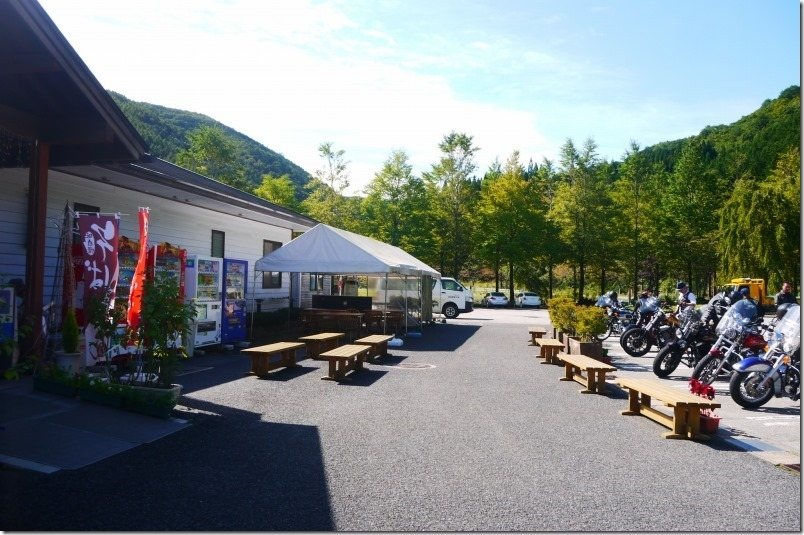
飛騨への玄関口､郡上市明宝にある道の駅です｡郡上から約14km､その規模は岐阜県下でも最大級です｡地元のお店がテナントとして入っていて､地域と一緒に盛り上がっているのが魅力です｡
名物の明宝フランクは､ブログ筆者がロングライドのたびに食べる､補給の定番｡向かいの明宝ジェラートでアイスもいただけます｡
福井･石徹白方面への入口｡明宝フランクとカンミナのラーメンが待っている
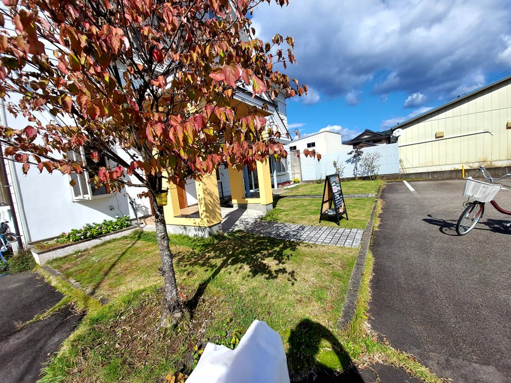
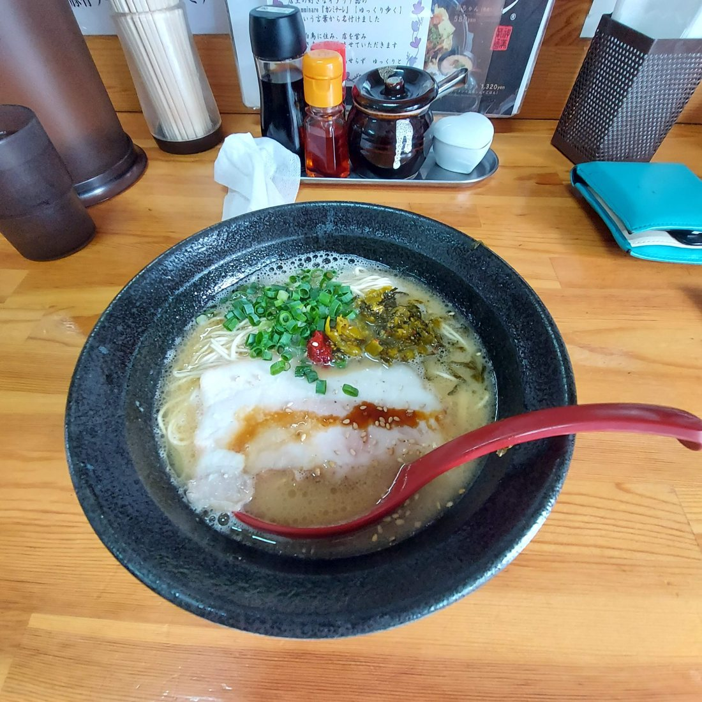
郡上市白鳥町にある道の駅です｡石徹白や福井方面へ向かうライドの拠点で､2025年9月のライドでも､ここに朝9時に到着してスタートしました｡
道の駅内の｢郡上豚骨カンミナ｣のラーメンは本当においしいと､ブログでも評判です｡明宝フランクで補給して､白川郷方面へ向かったこともあります｡
立ち寄れるコース: 白鳥サイクリングfrom美濃
※紹介は､トマト工業ブログ(2016年〜2026年)の記事をもとにしています｡営業時間や定休日は変わることがあるので､お出かけの前にご確認ください｡